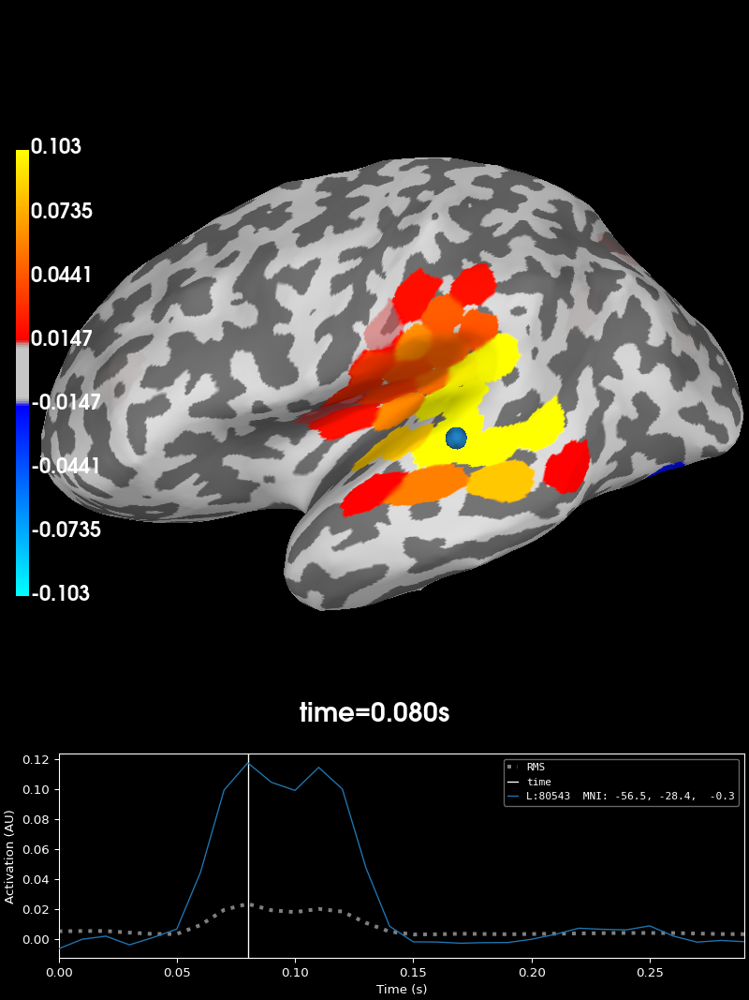
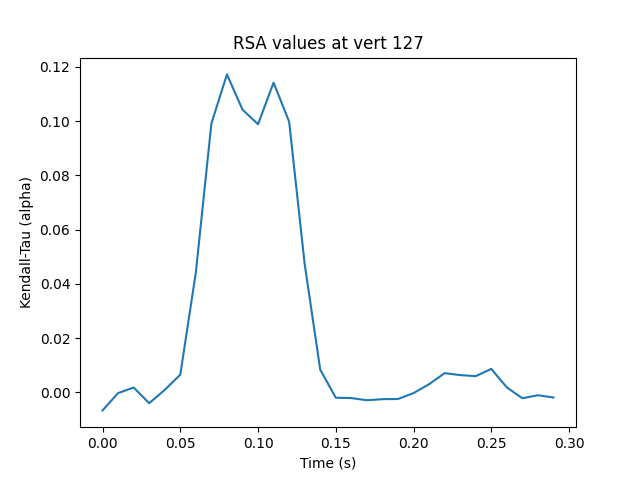

Note
Go to the end to download the full example code.
Source-level RSA using a searchlight on surface data#
This example demonstrates how to perform representational similarity analysis (RSA) on source localized MEG data, using a searchlight approach.
In the searchlight approach, representational similarity is computed between the model and searchlight “patches”. A patch is defined by a seed vertex on the cortex and all vertices within a given radius. By default, patches are created using each vertex as a seed point, so you can think of it as a “searchlight” that scans along the cortex.
The radius of a searchlight can be defined in space, in time, or both. In this example, our searchlight will have a spatial radius of 2 cm. and a temporal radius of 20 ms.
The dataset will be the MNE-sample dataset: a collection of 288 epochs in which the participant was presented with an auditory beep or visual stimulus to either the left or right ear or visual field.
# sphinx_gallery_thumbnail_number=2
import mne
import mne_rsa
# Import required packages
from matplotlib import pyplot as plt
mne.set_log_level(False) # Be less verbose
mne.viz.set_3d_backend("pyvista")
'pyvistaqt'
We’ll be using the data from the MNE-sample set. To speed up computations in this example, we’re going to use one of the sparse source spaces from the testing set.
sample_root = mne.datasets.sample.data_path(verbose=True)
testing_root = mne.datasets.testing.data_path(verbose=True)
sample_path = sample_root / "MEG" / "sample"
testing_path = testing_root / "MEG" / "sample"
subjects_dir = sample_root / "subjects"
Creating epochs from the continuous (raw) data. We downsample to 100 Hz to speed up the RSA computations later on.
raw = mne.io.read_raw_fif(sample_path / "sample_audvis_filt-0-40_raw.fif")
events = mne.read_events(sample_path / "sample_audvis_filt-0-40_raw-eve.fif")
event_id = {"audio/left": 1, "audio/right": 2, "visual/left": 3, "visual/right": 4}
epochs = mne.Epochs(raw, events, event_id, preload=True)
epochs.resample(100)
It’s important that the model RDM and the epochs are in the same order, so that each row in the model RDM will correspond to an epoch. The model RDM will be easier to interpret visually if the data is ordered such that all epochs belonging to the same experimental condition are right next to each-other, so patterns jump out. This can be achieved by first splitting the epochs by experimental condition and then concatenating them together again.
epoch_splits = [
epochs[cl] for cl in ["audio/left", "audio/right", "visual/left", "visual/right"]
]
epochs = mne.concatenate_epochs(epoch_splits)
Now that the epochs are in the proper order, we can create a RDM based on the experimental conditions. This type of RDM is referred to as a “sensitivity RDM”. Let’s create a sensitivity RDM that will pick up the left auditory response when RSA-ed against the MEG data. Since we want to capture areas where left beeps generate a large signal, we specify that left beeps should be similar to other left beeps. Since we do not want areas where visual stimuli generate a large signal, we specify that beeps must be different from visual stimuli. Furthermore, since in areas where visual stimuli generate only a small signal, random noise will dominate, we also specify that visual stimuli are different from other visual stimuli. Finally left and right auditory beeps will be somewhat similar.
def sensitivity_metric(event_id_1, event_id_2):
"""Determine similarity between two epochs, given their event ids."""
if event_id_1 == 1 and event_id_2 == 1:
return 0 # Completely similar
if event_id_1 == 2 and event_id_2 == 2:
return 0.5 # Somewhat similar
elif event_id_1 == 1 and event_id_2 == 2:
return 0.5 # Somewhat similar
elif event_id_1 == 2 and event_id_1 == 1:
return 0.5 # Somewhat similar
else:
return 1 # Not similar at all
model_rdm = mne_rsa.compute_rdm(epochs.events[:, 2], metric=sensitivity_metric)
mne_rsa.plot_rdms(model_rdm, title="Model RDM")

<Figure size 200x200 with 2 Axes>
This example is going to be on source-level, so let’s load the inverse operator and apply it to obtain a cortical surface source estimate for each epoch. To speed up the computation, we going to load an inverse operator from the testing dataset that was created using a sparse source space with not too many vertices.
inv = mne.minimum_norm.read_inverse_operator(
testing_path / "sample_audvis_trunc-meg-eeg-oct-4-meg-inv.fif"
)
epochs_stc = mne.minimum_norm.apply_inverse_epochs(epochs, inv, lambda2=0.1111)
Performing the RSA. This will take some time. Consider increasing n_jobs to
parallelize the computation across multiple CPUs.
rsa_vals = mne_rsa.rsa_stcs(
epochs_stc, # The source localized epochs
model_rdm, # The model RDM we constructed above
src=inv["src"], # The inverse operator has our source space
stc_rdm_metric="correlation", # Metric to compute the MEG RDMs
rsa_metric="kendall-tau-a", # Metric to compare model and EEG RDMs
spatial_radius=0.02, # Spatial radius of the searchlight patch
temporal_radius=0.02, # Temporal radius of the searchlight path
tmin=0,
tmax=0.3, # To save time, only analyze this time interval
n_jobs=1, # Only use one CPU core. Increase this for more speed.
verbose=True,
) # Set to True to display a progress bar
# Find the searchlight patch with highest RSA score
peak_vertex, peak_time = rsa_vals.get_peak(vert_as_index=True)
# Plot the result at the timepoint where the maximum RSA value occurs.
rsa_vals.plot("sample", subjects_dir=subjects_dir, initial_time=peak_time)

Calculating source space distances (limit=20.0 mm)...
Not adding patch information, dist_limit too small
Performing RSA between SourceEstimates and 1 model RDM(s)
Spatial radius: 0.02 meters
Using 498 vertices
Temporal radius: 2 samples
Time interval: 0-0.3 seconds
Number of searchlight patches: 14940
0%| | 0/14940 [00:00<?, ?patch/s]Creating spatio-temporal searchlight patches
0%| | 19/14940 [00:00<01:19, 187.66patch/s]
0%| | 38/14940 [00:00<01:19, 187.93patch/s]
0%| | 58/14940 [00:00<01:18, 189.08patch/s]
1%| | 78/14940 [00:00<01:18, 189.81patch/s]
1%| | 97/14940 [00:00<01:18, 189.37patch/s]
1%| | 116/14940 [00:00<01:18, 188.34patch/s]
1%| | 135/14940 [00:00<01:18, 187.50patch/s]
1%| | 154/14940 [00:00<01:19, 187.15patch/s]
1%| | 173/14940 [00:00<01:19, 186.82patch/s]
1%|▏ | 192/14940 [00:01<01:18, 187.45patch/s]
1%|▏ | 212/14940 [00:01<01:18, 188.40patch/s]
2%|▏ | 232/14940 [00:01<01:17, 189.10patch/s]
2%|▏ | 251/14940 [00:01<01:17, 189.24patch/s]
2%|▏ | 270/14940 [00:01<01:17, 189.08patch/s]
2%|▏ | 289/14940 [00:01<01:17, 188.13patch/s]
2%|▏ | 308/14940 [00:01<01:17, 187.81patch/s]
2%|▏ | 327/14940 [00:01<01:17, 187.88patch/s]
2%|▏ | 346/14940 [00:01<01:17, 188.48patch/s]
2%|▏ | 365/14940 [00:01<01:17, 188.53patch/s]
3%|▎ | 384/14940 [00:02<01:17, 187.27patch/s]
3%|▎ | 403/14940 [00:02<01:17, 186.74patch/s]
3%|▎ | 422/14940 [00:02<01:17, 186.76patch/s]
3%|▎ | 442/14940 [00:02<01:17, 187.99patch/s]
3%|▎ | 462/14940 [00:02<01:16, 188.78patch/s]
3%|▎ | 482/14940 [00:02<01:16, 189.26patch/s]
3%|▎ | 502/14940 [00:02<01:16, 189.79patch/s]
3%|▎ | 521/14940 [00:02<01:16, 189.20patch/s]
4%|▎ | 540/14940 [00:02<01:16, 188.27patch/s]
4%|▎ | 559/14940 [00:02<01:16, 187.65patch/s]
4%|▍ | 578/14940 [00:03<01:16, 187.17patch/s]
4%|▍ | 597/14940 [00:03<01:16, 186.96patch/s]
4%|▍ | 616/14940 [00:03<01:16, 186.67patch/s]
4%|▍ | 635/14940 [00:03<01:16, 186.51patch/s]
4%|▍ | 654/14940 [00:03<01:16, 186.43patch/s]
5%|▍ | 673/14940 [00:03<01:16, 186.37patch/s]
5%|▍ | 692/14940 [00:03<01:16, 186.15patch/s]
5%|▍ | 711/14940 [00:03<01:16, 186.13patch/s]
5%|▍ | 730/14940 [00:03<01:16, 186.86patch/s]
5%|▌ | 750/14940 [00:03<01:15, 187.91patch/s]
5%|▌ | 769/14940 [00:04<01:15, 187.47patch/s]
5%|▌ | 788/14940 [00:04<01:15, 186.90patch/s]
5%|▌ | 807/14940 [00:04<01:15, 186.17patch/s]
6%|▌ | 826/14940 [00:04<01:15, 186.13patch/s]
6%|▌ | 845/14940 [00:04<01:15, 186.18patch/s]
6%|▌ | 864/14940 [00:04<01:15, 186.26patch/s]
6%|▌ | 883/14940 [00:04<01:15, 185.23patch/s]
6%|▌ | 902/14940 [00:04<01:16, 184.28patch/s]
6%|▌ | 921/14940 [00:04<01:16, 184.16patch/s]
6%|▋ | 940/14940 [00:05<01:15, 185.16patch/s]
6%|▋ | 960/14940 [00:05<01:14, 186.79patch/s]
7%|▋ | 979/14940 [00:05<01:15, 186.09patch/s]
7%|▋ | 998/14940 [00:05<01:14, 186.35patch/s]
7%|▋ | 1018/14940 [00:05<01:14, 187.67patch/s]
7%|▋ | 1037/14940 [00:05<01:14, 186.85patch/s]
7%|▋ | 1056/14940 [00:05<01:14, 186.33patch/s]
7%|▋ | 1075/14940 [00:05<01:14, 187.07patch/s]
7%|▋ | 1095/14940 [00:05<01:13, 188.01patch/s]
7%|▋ | 1115/14940 [00:05<01:13, 188.68patch/s]
8%|▊ | 1134/14940 [00:06<01:13, 188.65patch/s]
8%|▊ | 1154/14940 [00:06<01:12, 189.06patch/s]
8%|▊ | 1174/14940 [00:06<01:12, 189.57patch/s]
8%|▊ | 1194/14940 [00:06<01:12, 189.94patch/s]
8%|▊ | 1214/14940 [00:06<01:12, 190.32patch/s]
8%|▊ | 1234/14940 [00:06<01:12, 190.09patch/s]
8%|▊ | 1254/14940 [00:06<01:12, 188.90patch/s]
9%|▊ | 1273/14940 [00:06<01:12, 187.95patch/s]
9%|▊ | 1292/14940 [00:06<01:12, 187.46patch/s]
9%|▉ | 1311/14940 [00:06<01:12, 187.12patch/s]
9%|▉ | 1330/14940 [00:07<01:12, 186.83patch/s]
9%|▉ | 1349/14940 [00:07<01:12, 186.68patch/s]
9%|▉ | 1368/14940 [00:07<01:12, 187.33patch/s]
9%|▉ | 1387/14940 [00:07<01:12, 187.52patch/s]
9%|▉ | 1406/14940 [00:07<01:12, 187.19patch/s]
10%|▉ | 1425/14940 [00:07<01:12, 186.52patch/s]
10%|▉ | 1444/14940 [00:07<01:12, 185.51patch/s]
10%|▉ | 1463/14940 [00:07<01:13, 184.44patch/s]
10%|▉ | 1482/14940 [00:07<01:12, 185.36patch/s]
10%|█ | 1502/14940 [00:08<01:11, 186.77patch/s]
10%|█ | 1521/14940 [00:08<01:11, 186.68patch/s]
10%|█ | 1540/14940 [00:08<01:11, 187.27patch/s]
10%|█ | 1560/14940 [00:08<01:11, 188.31patch/s]
11%|█ | 1579/14940 [00:08<01:11, 186.40patch/s]
11%|█ | 1598/14940 [00:08<01:11, 185.83patch/s]
11%|█ | 1617/14940 [00:08<01:11, 186.67patch/s]
11%|█ | 1636/14940 [00:08<01:11, 185.63patch/s]
11%|█ | 1655/14940 [00:08<01:11, 184.84patch/s]
11%|█ | 1674/14940 [00:08<01:11, 185.90patch/s]
11%|█▏ | 1693/14940 [00:09<01:11, 184.74patch/s]
11%|█▏ | 1712/14940 [00:09<01:12, 183.41patch/s]
12%|█▏ | 1731/14940 [00:09<01:11, 185.02patch/s]
12%|█▏ | 1750/14940 [00:09<01:10, 186.48patch/s]
12%|█▏ | 1770/14940 [00:09<01:10, 187.79patch/s]
12%|█▏ | 1789/14940 [00:09<01:11, 185.08patch/s]
12%|█▏ | 1808/14940 [00:09<01:11, 182.95patch/s]
12%|█▏ | 1827/14940 [00:09<01:12, 180.98patch/s]
12%|█▏ | 1846/14940 [00:09<01:11, 182.08patch/s]
12%|█▏ | 1865/14940 [00:09<01:11, 183.57patch/s]
13%|█▎ | 1885/14940 [00:10<01:10, 185.69patch/s]
13%|█▎ | 1904/14940 [00:10<01:09, 186.26patch/s]
13%|█▎ | 1923/14940 [00:10<01:09, 186.28patch/s]
13%|█▎ | 1942/14940 [00:10<01:09, 186.38patch/s]
13%|█▎ | 1961/14940 [00:10<01:10, 185.31patch/s]
13%|█▎ | 1981/14940 [00:10<01:09, 186.84patch/s]
13%|█▎ | 2000/14940 [00:10<01:09, 186.55patch/s]
14%|█▎ | 2019/14940 [00:10<01:09, 186.21patch/s]
14%|█▎ | 2038/14940 [00:10<01:09, 185.69patch/s]
14%|█▍ | 2057/14940 [00:11<01:09, 186.54patch/s]
14%|█▍ | 2076/14940 [00:11<01:08, 187.00patch/s]
14%|█▍ | 2095/14940 [00:11<01:08, 186.84patch/s]
14%|█▍ | 2114/14940 [00:11<01:08, 187.31patch/s]
14%|█▍ | 2133/14940 [00:11<01:08, 187.66patch/s]
14%|█▍ | 2152/14940 [00:11<01:08, 187.29patch/s]
15%|█▍ | 2171/14940 [00:11<01:08, 185.25patch/s]
15%|█▍ | 2190/14940 [00:11<01:09, 182.77patch/s]
15%|█▍ | 2210/14940 [00:11<01:08, 185.15patch/s]
15%|█▍ | 2229/14940 [00:11<01:08, 185.09patch/s]
15%|█▌ | 2248/14940 [00:12<01:09, 183.19patch/s]
15%|█▌ | 2267/14940 [00:12<01:08, 184.54patch/s]
15%|█▌ | 2286/14940 [00:12<01:08, 184.66patch/s]
15%|█▌ | 2305/14940 [00:12<01:09, 182.28patch/s]
16%|█▌ | 2324/14940 [00:12<01:09, 182.69patch/s]
16%|█▌ | 2343/14940 [00:12<01:08, 183.67patch/s]
16%|█▌ | 2362/14940 [00:12<01:08, 183.73patch/s]
16%|█▌ | 2381/14940 [00:12<01:08, 182.86patch/s]
16%|█▌ | 2400/14940 [00:12<01:08, 181.76patch/s]
16%|█▌ | 2419/14940 [00:12<01:09, 180.20patch/s]
16%|█▋ | 2438/14940 [00:13<01:09, 180.64patch/s]
16%|█▋ | 2457/14940 [00:13<01:08, 183.15patch/s]
17%|█▋ | 2476/14940 [00:13<01:07, 184.22patch/s]
17%|█▋ | 2495/14940 [00:13<01:07, 184.01patch/s]
17%|█▋ | 2514/14940 [00:13<01:08, 181.77patch/s]
17%|█▋ | 2533/14940 [00:13<01:07, 182.46patch/s]
17%|█▋ | 2552/14940 [00:13<01:07, 184.24patch/s]
17%|█▋ | 2571/14940 [00:13<01:06, 185.56patch/s]
17%|█▋ | 2590/14940 [00:13<01:06, 185.38patch/s]
17%|█▋ | 2609/14940 [00:14<01:06, 184.38patch/s]
18%|█▊ | 2628/14940 [00:14<01:06, 184.79patch/s]
18%|█▊ | 2647/14940 [00:14<01:06, 185.52patch/s]
18%|█▊ | 2666/14940 [00:14<01:05, 186.57patch/s]
18%|█▊ | 2685/14940 [00:14<01:05, 186.71patch/s]
18%|█▊ | 2704/14940 [00:14<01:05, 186.49patch/s]
18%|█▊ | 2723/14940 [00:14<01:05, 186.47patch/s]
18%|█▊ | 2742/14940 [00:14<01:05, 184.96patch/s]
18%|█▊ | 2761/14940 [00:14<01:06, 182.73patch/s]
19%|█▊ | 2780/14940 [00:14<01:06, 181.72patch/s]
19%|█▊ | 2799/14940 [00:15<01:06, 181.35patch/s]
19%|█▉ | 2818/14940 [00:15<01:06, 181.52patch/s]
19%|█▉ | 2837/14940 [00:15<01:06, 180.79patch/s]
19%|█▉ | 2856/14940 [00:15<01:07, 180.33patch/s]
19%|█▉ | 2875/14940 [00:15<01:06, 180.82patch/s]
19%|█▉ | 2894/14940 [00:15<01:06, 181.65patch/s]
19%|█▉ | 2913/14940 [00:15<01:05, 182.25patch/s]
20%|█▉ | 2932/14940 [00:15<01:05, 182.71patch/s]
20%|█▉ | 2951/14940 [00:15<01:05, 182.20patch/s]
20%|█▉ | 2970/14940 [00:15<01:06, 181.22patch/s]
20%|██ | 2989/14940 [00:16<01:05, 182.53patch/s]
20%|██ | 3008/14940 [00:16<01:05, 183.04patch/s]
20%|██ | 3027/14940 [00:16<01:05, 182.75patch/s]
20%|██ | 3046/14940 [00:16<01:04, 183.13patch/s]
21%|██ | 3065/14940 [00:16<01:04, 183.61patch/s]
21%|██ | 3084/14940 [00:16<01:04, 184.40patch/s]
21%|██ | 3103/14940 [00:16<01:03, 185.44patch/s]
21%|██ | 3122/14940 [00:16<01:03, 186.03patch/s]
21%|██ | 3141/14940 [00:16<01:04, 183.22patch/s]
21%|██ | 3160/14940 [00:17<01:04, 182.77patch/s]
21%|██▏ | 3179/14940 [00:17<01:04, 183.69patch/s]
21%|██▏ | 3198/14940 [00:17<01:04, 181.72patch/s]
22%|██▏ | 3217/14940 [00:17<01:04, 180.76patch/s]
22%|██▏ | 3236/14940 [00:17<01:04, 181.14patch/s]
22%|██▏ | 3255/14940 [00:17<01:04, 182.39patch/s]
22%|██▏ | 3274/14940 [00:17<01:03, 183.40patch/s]
22%|██▏ | 3293/14940 [00:17<01:03, 184.29patch/s]
22%|██▏ | 3312/14940 [00:17<01:03, 183.49patch/s]
22%|██▏ | 3331/14940 [00:17<01:03, 182.27patch/s]
22%|██▏ | 3350/14940 [00:18<01:03, 183.49patch/s]
23%|██▎ | 3369/14940 [00:18<01:02, 184.32patch/s]
23%|██▎ | 3388/14940 [00:18<01:02, 184.99patch/s]
23%|██▎ | 3407/14940 [00:18<01:02, 185.40patch/s]
23%|██▎ | 3426/14940 [00:18<01:02, 185.70patch/s]
23%|██▎ | 3445/14940 [00:18<01:01, 185.87patch/s]
23%|██▎ | 3464/14940 [00:18<01:01, 185.59patch/s]
23%|██▎ | 3483/14940 [00:18<01:01, 185.17patch/s]
23%|██▎ | 3502/14940 [00:18<01:01, 185.50patch/s]
24%|██▎ | 3521/14940 [00:18<01:01, 185.77patch/s]
24%|██▎ | 3540/14940 [00:19<01:01, 185.87patch/s]
24%|██▍ | 3559/14940 [00:19<01:01, 185.38patch/s]
24%|██▍ | 3578/14940 [00:19<01:01, 185.32patch/s]
24%|██▍ | 3597/14940 [00:19<01:01, 185.61patch/s]
24%|██▍ | 3616/14940 [00:19<01:00, 185.78patch/s]
24%|██▍ | 3635/14940 [00:19<01:01, 185.16patch/s]
24%|██▍ | 3654/14940 [00:19<01:01, 182.39patch/s]
25%|██▍ | 3673/14940 [00:19<01:01, 182.60patch/s]
25%|██▍ | 3692/14940 [00:19<01:01, 183.43patch/s]
25%|██▍ | 3711/14940 [00:20<01:01, 181.30patch/s]
25%|██▍ | 3730/14940 [00:20<01:02, 180.24patch/s]
25%|██▌ | 3749/14940 [00:20<01:02, 179.94patch/s]
25%|██▌ | 3768/14940 [00:20<01:01, 180.96patch/s]
25%|██▌ | 3787/14940 [00:20<01:01, 182.37patch/s]
25%|██▌ | 3806/14940 [00:20<01:00, 182.88patch/s]
26%|██▌ | 3825/14940 [00:20<01:00, 182.69patch/s]
26%|██▌ | 3844/14940 [00:20<01:00, 182.58patch/s]
26%|██▌ | 3863/14940 [00:20<01:00, 182.96patch/s]
26%|██▌ | 3882/14940 [00:20<01:00, 182.81patch/s]
26%|██▌ | 3901/14940 [00:21<01:00, 182.39patch/s]
26%|██▌ | 3920/14940 [00:21<01:01, 180.56patch/s]
26%|██▋ | 3939/14940 [00:21<01:01, 179.68patch/s]
26%|██▋ | 3957/14940 [00:21<01:01, 179.58patch/s]
27%|██▋ | 3976/14940 [00:21<01:00, 180.12patch/s]
27%|██▋ | 3995/14940 [00:21<01:00, 180.92patch/s]
27%|██▋ | 4014/14940 [00:21<00:59, 182.40patch/s]
27%|██▋ | 4033/14940 [00:21<00:59, 183.42patch/s]
27%|██▋ | 4052/14940 [00:21<00:59, 184.20patch/s]
27%|██▋ | 4071/14940 [00:21<00:58, 184.82patch/s]
27%|██▋ | 4090/14940 [00:22<00:58, 185.27patch/s]
28%|██▊ | 4109/14940 [00:22<00:58, 185.54patch/s]
28%|██▊ | 4128/14940 [00:22<00:58, 185.73patch/s]
28%|██▊ | 4147/14940 [00:22<00:58, 185.34patch/s]
28%|██▊ | 4166/14940 [00:22<00:58, 184.22patch/s]
28%|██▊ | 4185/14940 [00:22<00:58, 184.02patch/s]
28%|██▊ | 4204/14940 [00:22<00:58, 184.19patch/s]
28%|██▊ | 4223/14940 [00:22<00:57, 184.82patch/s]
28%|██▊ | 4242/14940 [00:22<00:57, 184.83patch/s]
29%|██▊ | 4261/14940 [00:23<00:57, 184.44patch/s]
29%|██▊ | 4280/14940 [00:23<00:58, 182.09patch/s]
29%|██▉ | 4299/14940 [00:23<00:58, 182.15patch/s]
29%|██▉ | 4318/14940 [00:23<00:57, 184.14patch/s]
29%|██▉ | 4337/14940 [00:23<00:57, 182.88patch/s]
29%|██▉ | 4356/14940 [00:23<00:58, 181.64patch/s]
29%|██▉ | 4375/14940 [00:23<00:58, 180.80patch/s]
29%|██▉ | 4394/14940 [00:23<00:57, 182.38patch/s]
30%|██▉ | 4413/14940 [00:23<00:57, 183.92patch/s]
30%|██▉ | 4432/14940 [00:23<00:56, 184.59patch/s]
30%|██▉ | 4451/14940 [00:24<00:56, 185.04patch/s]
30%|██▉ | 4470/14940 [00:24<00:56, 185.38patch/s]
30%|███ | 4489/14940 [00:24<00:56, 185.60patch/s]
30%|███ | 4508/14940 [00:24<00:56, 186.15patch/s]
30%|███ | 4527/14940 [00:24<00:55, 186.93patch/s]
30%|███ | 4546/14940 [00:24<00:56, 184.31patch/s]
31%|███ | 4565/14940 [00:24<00:56, 182.53patch/s]
31%|███ | 4584/14940 [00:24<00:56, 182.93patch/s]
31%|███ | 4603/14940 [00:24<00:56, 183.08patch/s]
31%|███ | 4622/14940 [00:24<00:56, 183.48patch/s]
31%|███ | 4641/14940 [00:25<00:55, 184.29patch/s]
31%|███ | 4660/14940 [00:25<00:55, 184.89patch/s]
31%|███▏ | 4679/14940 [00:25<00:55, 184.80patch/s]
31%|███▏ | 4698/14940 [00:25<00:55, 183.54patch/s]
32%|███▏ | 4717/14940 [00:25<00:55, 182.61patch/s]
32%|███▏ | 4736/14940 [00:25<00:56, 181.69patch/s]
32%|███▏ | 4755/14940 [00:25<00:55, 182.60patch/s]
32%|███▏ | 4774/14940 [00:25<00:55, 183.88patch/s]
32%|███▏ | 4793/14940 [00:25<00:54, 185.51patch/s]
32%|███▏ | 4812/14940 [00:26<00:54, 185.95patch/s]
32%|███▏ | 4831/14940 [00:26<00:54, 186.00patch/s]
32%|███▏ | 4850/14940 [00:26<00:54, 183.99patch/s]
33%|███▎ | 4869/14940 [00:26<00:54, 184.19patch/s]
33%|███▎ | 4889/14940 [00:26<00:53, 186.25patch/s]
33%|███▎ | 4908/14940 [00:26<00:53, 187.02patch/s]
33%|███▎ | 4927/14940 [00:26<00:53, 187.38patch/s]
33%|███▎ | 4946/14940 [00:26<00:53, 187.11patch/s]
33%|███▎ | 4965/14940 [00:26<00:53, 186.44patch/s]
33%|███▎ | 4984/14940 [00:26<00:53, 186.33patch/s]
33%|███▎ | 5003/14940 [00:27<00:53, 186.38patch/s]
34%|███▎ | 5022/14940 [00:27<00:53, 186.77patch/s]
34%|███▎ | 5041/14940 [00:27<00:52, 187.47patch/s]
34%|███▍ | 5060/14940 [00:27<00:52, 188.01patch/s]
34%|███▍ | 5079/14940 [00:27<00:52, 188.29patch/s]
34%|███▍ | 5098/14940 [00:27<00:52, 188.54patch/s]
34%|███▍ | 5117/14940 [00:27<00:52, 186.65patch/s]
34%|███▍ | 5136/14940 [00:27<00:52, 186.09patch/s]
35%|███▍ | 5156/14940 [00:27<00:52, 187.40patch/s]
35%|███▍ | 5175/14940 [00:27<00:52, 186.22patch/s]
35%|███▍ | 5194/14940 [00:28<00:52, 185.24patch/s]
35%|███▍ | 5213/14940 [00:28<00:52, 185.65patch/s]
35%|███▌ | 5232/14940 [00:28<00:52, 185.92patch/s]
35%|███▌ | 5251/14940 [00:28<00:52, 186.09patch/s]
35%|███▌ | 5270/14940 [00:28<00:51, 186.04patch/s]
35%|███▌ | 5289/14940 [00:28<00:51, 186.31patch/s]
36%|███▌ | 5308/14940 [00:28<00:51, 186.83patch/s]
36%|███▌ | 5327/14940 [00:28<00:51, 185.46patch/s]
36%|███▌ | 5346/14940 [00:28<00:51, 184.91patch/s]
36%|███▌ | 5365/14940 [00:28<00:51, 186.11patch/s]
36%|███▌ | 5385/14940 [00:29<00:51, 187.34patch/s]
36%|███▌ | 5404/14940 [00:29<00:50, 187.96patch/s]
36%|███▋ | 5423/14940 [00:29<00:50, 187.49patch/s]
36%|███▋ | 5442/14940 [00:29<00:50, 187.61patch/s]
37%|███▋ | 5461/14940 [00:29<00:50, 187.96patch/s]
37%|███▋ | 5480/14940 [00:29<00:50, 187.52patch/s]
37%|███▋ | 5499/14940 [00:29<00:50, 186.81patch/s]
37%|███▋ | 5518/14940 [00:29<00:50, 186.10patch/s]
37%|███▋ | 5537/14940 [00:29<00:50, 187.18patch/s]
37%|███▋ | 5556/14940 [00:30<00:51, 181.10patch/s]
37%|███▋ | 5575/14940 [00:30<00:52, 176.73patch/s]
37%|███▋ | 5594/14940 [00:30<00:51, 180.07patch/s]
38%|███▊ | 5613/14940 [00:30<00:51, 182.69patch/s]
38%|███▊ | 5632/14940 [00:30<00:50, 184.68patch/s]
38%|███▊ | 5651/14940 [00:30<00:50, 185.27patch/s]
38%|███▊ | 5670/14940 [00:30<00:50, 184.94patch/s]
38%|███▊ | 5689/14940 [00:30<00:50, 184.63patch/s]
38%|███▊ | 5708/14940 [00:30<00:49, 185.18patch/s]
38%|███▊ | 5728/14940 [00:30<00:49, 186.76patch/s]
38%|███▊ | 5747/14940 [00:31<00:49, 187.39patch/s]
39%|███▊ | 5766/14940 [00:31<00:48, 187.97patch/s]
39%|███▊ | 5786/14940 [00:31<00:48, 188.86patch/s]
39%|███▉ | 5805/14940 [00:31<00:48, 188.30patch/s]
39%|███▉ | 5824/14940 [00:31<00:48, 187.88patch/s]
39%|███▉ | 5843/14940 [00:31<00:48, 188.11patch/s]
39%|███▉ | 5862/14940 [00:31<00:48, 188.29patch/s]
39%|███▉ | 5881/14940 [00:31<00:48, 188.44patch/s]
39%|███▉ | 5900/14940 [00:31<00:48, 187.15patch/s]
40%|███▉ | 5919/14940 [00:31<00:48, 186.51patch/s]
40%|███▉ | 5938/14940 [00:32<00:48, 186.50patch/s]
40%|███▉ | 5957/14940 [00:32<00:48, 186.28patch/s]
40%|████ | 5976/14940 [00:32<00:48, 186.12patch/s]
40%|████ | 5995/14940 [00:32<00:48, 185.50patch/s]
40%|████ | 6014/14940 [00:32<00:48, 184.14patch/s]
40%|████ | 6033/14940 [00:32<00:48, 183.50patch/s]
41%|████ | 6052/14940 [00:32<00:48, 184.33patch/s]
41%|████ | 6071/14940 [00:32<00:47, 185.29patch/s]
41%|████ | 6090/14940 [00:32<00:47, 186.19patch/s]
41%|████ | 6109/14940 [00:32<00:47, 186.95patch/s]
41%|████ | 6128/14940 [00:33<00:46, 187.65patch/s]
41%|████ | 6148/14940 [00:33<00:46, 188.49patch/s]
41%|████▏ | 6167/14940 [00:33<00:46, 188.00patch/s]
41%|████▏ | 6186/14940 [00:33<00:46, 187.67patch/s]
42%|████▏ | 6205/14940 [00:33<00:46, 187.78patch/s]
42%|████▏ | 6224/14940 [00:33<00:46, 186.87patch/s]
42%|████▏ | 6243/14940 [00:33<00:46, 186.23patch/s]
42%|████▏ | 6262/14940 [00:33<00:46, 186.97patch/s]
42%|████▏ | 6281/14940 [00:33<00:46, 186.53patch/s]
42%|████▏ | 6300/14940 [00:33<00:46, 185.59patch/s]
42%|████▏ | 6319/14940 [00:34<00:47, 181.66patch/s]
42%|████▏ | 6338/14940 [00:34<00:48, 176.38patch/s]
43%|████▎ | 6357/14940 [00:34<00:47, 179.32patch/s]
43%|████▎ | 6376/14940 [00:34<00:47, 182.00patch/s]
43%|████▎ | 6395/14940 [00:34<00:46, 184.03patch/s]
43%|████▎ | 6415/14940 [00:34<00:45, 186.01patch/s]
43%|████▎ | 6434/14940 [00:34<00:45, 185.84patch/s]
43%|████▎ | 6453/14940 [00:34<00:45, 185.39patch/s]
43%|████▎ | 6473/14940 [00:34<00:45, 186.84patch/s]
43%|████▎ | 6493/14940 [00:35<00:44, 187.89patch/s]
44%|████▎ | 6513/14940 [00:35<00:44, 188.63patch/s]
44%|████▎ | 6532/14940 [00:35<00:44, 188.73patch/s]
44%|████▍ | 6551/14940 [00:35<00:44, 188.19patch/s]
44%|████▍ | 6570/14940 [00:35<00:44, 187.43patch/s]
44%|████▍ | 6590/14940 [00:35<00:44, 188.27patch/s]
44%|████▍ | 6609/14940 [00:35<00:44, 187.84patch/s]
44%|████▍ | 6628/14940 [00:35<00:44, 186.76patch/s]
44%|████▍ | 6647/14940 [00:35<00:44, 186.04patch/s]
45%|████▍ | 6666/14940 [00:35<00:44, 185.72patch/s]
45%|████▍ | 6685/14940 [00:36<00:44, 185.80patch/s]
45%|████▍ | 6704/14940 [00:36<00:44, 186.38patch/s]
45%|████▌ | 6723/14940 [00:36<00:43, 187.11patch/s]
45%|████▌ | 6742/14940 [00:36<00:43, 187.71patch/s]
45%|████▌ | 6761/14940 [00:36<00:43, 188.07patch/s]
45%|████▌ | 6780/14940 [00:36<00:43, 188.27patch/s]
46%|████▌ | 6799/14940 [00:36<00:43, 188.41patch/s]
46%|████▌ | 6818/14940 [00:36<00:43, 188.69patch/s]
46%|████▌ | 6837/14940 [00:36<00:42, 189.05patch/s]
46%|████▌ | 6856/14940 [00:36<00:42, 188.90patch/s]
46%|████▌ | 6875/14940 [00:37<00:42, 188.87patch/s]
46%|████▌ | 6894/14940 [00:37<00:42, 188.79patch/s]
46%|████▋ | 6913/14940 [00:37<00:42, 188.62patch/s]
46%|████▋ | 6932/14940 [00:37<00:42, 188.68patch/s]
47%|████▋ | 6951/14940 [00:37<00:42, 188.10patch/s]
47%|████▋ | 6970/14940 [00:37<00:42, 187.44patch/s]
47%|████▋ | 6989/14940 [00:37<00:42, 187.06patch/s]
47%|████▋ | 7008/14940 [00:37<00:42, 187.87patch/s]
47%|████▋ | 7027/14940 [00:37<00:42, 188.06patch/s]
47%|████▋ | 7046/14940 [00:37<00:42, 187.40patch/s]
47%|████▋ | 7065/14940 [00:38<00:42, 186.94patch/s]
47%|████▋ | 7084/14940 [00:38<00:42, 186.85patch/s]
48%|████▊ | 7104/14940 [00:38<00:41, 187.87patch/s]
48%|████▊ | 7124/14940 [00:38<00:41, 188.54patch/s]
48%|████▊ | 7143/14940 [00:38<00:41, 188.93patch/s]
48%|████▊ | 7163/14940 [00:38<00:41, 189.30patch/s]
48%|████▊ | 7182/14940 [00:38<00:41, 189.14patch/s]
48%|████▊ | 7201/14940 [00:38<00:40, 188.95patch/s]
48%|████▊ | 7220/14940 [00:38<00:40, 188.72patch/s]
48%|████▊ | 7239/14940 [00:39<00:40, 188.62patch/s]
49%|████▊ | 7258/14940 [00:39<00:41, 185.22patch/s]
49%|████▊ | 7277/14940 [00:39<00:41, 186.14patch/s]
49%|████▉ | 7296/14940 [00:39<00:40, 186.84patch/s]
49%|████▉ | 7315/14940 [00:39<00:40, 187.33patch/s]
49%|████▉ | 7334/14940 [00:39<00:40, 188.04patch/s]
49%|████▉ | 7354/14940 [00:39<00:40, 188.63patch/s]
49%|████▉ | 7373/14940 [00:39<00:40, 188.43patch/s]
49%|████▉ | 7392/14940 [00:39<00:39, 188.83patch/s]
50%|████▉ | 7411/14940 [00:39<00:39, 189.02patch/s]
50%|████▉ | 7430/14940 [00:40<00:39, 187.96patch/s]
50%|████▉ | 7449/14940 [00:40<00:39, 187.85patch/s]
50%|████▉ | 7468/14940 [00:40<00:39, 188.45patch/s]
50%|█████ | 7487/14940 [00:40<00:39, 188.31patch/s]
50%|█████ | 7506/14940 [00:40<00:39, 188.23patch/s]
50%|█████ | 7526/14940 [00:40<00:39, 188.82patch/s]
51%|█████ | 7545/14940 [00:40<00:39, 188.73patch/s]
51%|█████ | 7564/14940 [00:40<00:39, 188.28patch/s]
51%|█████ | 7583/14940 [00:40<00:39, 187.55patch/s]
51%|█████ | 7602/14940 [00:40<00:39, 187.22patch/s]
51%|█████ | 7621/14940 [00:41<00:39, 187.54patch/s]
51%|█████ | 7641/14940 [00:41<00:38, 188.39patch/s]
51%|█████▏ | 7661/14940 [00:41<00:38, 189.05patch/s]
51%|█████▏ | 7681/14940 [00:41<00:38, 189.44patch/s]
52%|█████▏ | 7700/14940 [00:41<00:38, 188.49patch/s]
52%|█████▏ | 7719/14940 [00:41<00:38, 187.74patch/s]
52%|█████▏ | 7738/14940 [00:41<00:38, 187.20patch/s]
52%|█████▏ | 7757/14940 [00:41<00:38, 187.46patch/s]
52%|█████▏ | 7776/14940 [00:41<00:38, 187.45patch/s]
52%|█████▏ | 7795/14940 [00:41<00:38, 187.04patch/s]
52%|█████▏ | 7814/14940 [00:42<00:38, 187.30patch/s]
52%|█████▏ | 7833/14940 [00:42<00:37, 187.41patch/s]
53%|█████▎ | 7852/14940 [00:42<00:37, 187.03patch/s]
53%|█████▎ | 7871/14940 [00:42<00:37, 186.78patch/s]
53%|█████▎ | 7890/14940 [00:42<00:37, 186.67patch/s]
53%|█████▎ | 7910/14940 [00:42<00:37, 187.84patch/s]
53%|█████▎ | 7929/14940 [00:42<00:37, 188.30patch/s]
53%|█████▎ | 7948/14940 [00:42<00:37, 188.52patch/s]
53%|█████▎ | 7967/14940 [00:42<00:37, 187.06patch/s]
53%|█████▎ | 7986/14940 [00:42<00:37, 186.42patch/s]
54%|█████▎ | 8005/14940 [00:43<00:37, 186.39patch/s]
54%|█████▎ | 8024/14940 [00:43<00:36, 187.30patch/s]
54%|█████▍ | 8044/14940 [00:43<00:36, 188.20patch/s]
54%|█████▍ | 8063/14940 [00:43<00:36, 188.25patch/s]
54%|█████▍ | 8082/14940 [00:43<00:36, 186.88patch/s]
54%|█████▍ | 8101/14940 [00:43<00:36, 185.25patch/s]
54%|█████▍ | 8120/14940 [00:43<00:36, 185.41patch/s]
54%|█████▍ | 8139/14940 [00:43<00:36, 186.14patch/s]
55%|█████▍ | 8159/14940 [00:43<00:36, 187.43patch/s]
55%|█████▍ | 8178/14940 [00:44<00:36, 186.52patch/s]
55%|█████▍ | 8197/14940 [00:44<00:36, 185.77patch/s]
55%|█████▍ | 8216/14940 [00:44<00:36, 185.40patch/s]
55%|█████▌ | 8235/14940 [00:44<00:36, 184.81patch/s]
55%|█████▌ | 8254/14940 [00:44<00:36, 185.11patch/s]
55%|█████▌ | 8273/14940 [00:44<00:36, 184.74patch/s]
56%|█████▌ | 8292/14940 [00:44<00:35, 185.61patch/s]
56%|█████▌ | 8311/14940 [00:44<00:35, 186.81patch/s]
56%|█████▌ | 8330/14940 [00:44<00:35, 187.04patch/s]
56%|█████▌ | 8349/14940 [00:44<00:35, 187.53patch/s]
56%|█████▌ | 8368/14940 [00:45<00:34, 188.15patch/s]
56%|█████▌ | 8387/14940 [00:45<00:34, 188.55patch/s]
56%|█████▋ | 8406/14940 [00:45<00:34, 188.70patch/s]
56%|█████▋ | 8425/14940 [00:45<00:34, 188.42patch/s]
57%|█████▋ | 8444/14940 [00:45<00:34, 187.03patch/s]
57%|█████▋ | 8463/14940 [00:45<00:34, 185.62patch/s]
57%|█████▋ | 8482/14940 [00:45<00:34, 186.15patch/s]
57%|█████▋ | 8501/14940 [00:45<00:34, 186.74patch/s]
57%|█████▋ | 8520/14940 [00:45<00:34, 187.11patch/s]
57%|█████▋ | 8539/14940 [00:45<00:34, 186.39patch/s]
57%|█████▋ | 8558/14940 [00:46<00:34, 185.99patch/s]
57%|█████▋ | 8577/14940 [00:46<00:34, 185.92patch/s]
58%|█████▊ | 8596/14940 [00:46<00:34, 184.70patch/s]
58%|█████▊ | 8615/14940 [00:46<00:34, 183.91patch/s]
58%|█████▊ | 8634/14940 [00:46<00:34, 184.25patch/s]
58%|█████▊ | 8653/14940 [00:46<00:34, 184.66patch/s]
58%|█████▊ | 8672/14940 [00:46<00:33, 184.78patch/s]
58%|█████▊ | 8691/14940 [00:46<00:33, 186.14patch/s]
58%|█████▊ | 8710/14940 [00:46<00:33, 186.49patch/s]
58%|█████▊ | 8729/14940 [00:46<00:33, 186.17patch/s]
59%|█████▊ | 8748/14940 [00:47<00:33, 185.34patch/s]
59%|█████▊ | 8767/14940 [00:47<00:33, 184.94patch/s]
59%|█████▉ | 8786/14940 [00:47<00:33, 185.09patch/s]
59%|█████▉ | 8805/14940 [00:47<00:33, 185.15patch/s]
59%|█████▉ | 8824/14940 [00:47<00:32, 185.43patch/s]
59%|█████▉ | 8843/14940 [00:47<00:32, 186.54patch/s]
59%|█████▉ | 8862/14940 [00:47<00:32, 187.37patch/s]
59%|█████▉ | 8881/14940 [00:47<00:32, 187.89patch/s]
60%|█████▉ | 8900/14940 [00:47<00:32, 185.68patch/s]
60%|█████▉ | 8919/14940 [00:48<00:32, 184.61patch/s]
60%|█████▉ | 8938/14940 [00:48<00:32, 184.21patch/s]
60%|█████▉ | 8957/14940 [00:48<00:32, 185.63patch/s]
60%|██████ | 8976/14940 [00:48<00:31, 186.66patch/s]
60%|██████ | 8995/14940 [00:48<00:31, 187.03patch/s]
60%|██████ | 9014/14940 [00:48<00:31, 187.29patch/s]
60%|██████ | 9033/14940 [00:48<00:31, 187.60patch/s]
61%|██████ | 9052/14940 [00:48<00:31, 188.22patch/s]
61%|██████ | 9071/14940 [00:48<00:31, 187.75patch/s]
61%|██████ | 9090/14940 [00:48<00:31, 186.98patch/s]
61%|██████ | 9109/14940 [00:49<00:31, 187.41patch/s]
61%|██████ | 9128/14940 [00:49<00:30, 188.01patch/s]
61%|██████ | 9148/14940 [00:49<00:30, 188.83patch/s]
61%|██████▏ | 9167/14940 [00:49<00:31, 186.20patch/s]
61%|██████▏ | 9186/14940 [00:49<00:31, 184.63patch/s]
62%|██████▏ | 9205/14940 [00:49<00:30, 185.09patch/s]
62%|██████▏ | 9224/14940 [00:49<00:30, 185.92patch/s]
62%|██████▏ | 9243/14940 [00:49<00:30, 186.44patch/s]
62%|██████▏ | 9262/14940 [00:49<00:30, 186.43patch/s]
62%|██████▏ | 9281/14940 [00:49<00:30, 186.32patch/s]
62%|██████▏ | 9300/14940 [00:50<00:30, 186.30patch/s]
62%|██████▏ | 9319/14940 [00:50<00:30, 184.99patch/s]
63%|██████▎ | 9338/14940 [00:50<00:30, 185.10patch/s]
63%|██████▎ | 9358/14940 [00:50<00:29, 186.75patch/s]
63%|██████▎ | 9377/14940 [00:50<00:29, 186.69patch/s]
63%|██████▎ | 9396/14940 [00:50<00:29, 186.59patch/s]
63%|██████▎ | 9415/14940 [00:50<00:29, 186.36patch/s]
63%|██████▎ | 9434/14940 [00:50<00:29, 187.27patch/s]
63%|██████▎ | 9453/14940 [00:50<00:29, 187.33patch/s]
63%|██████▎ | 9472/14940 [00:50<00:29, 186.84patch/s]
64%|██████▎ | 9491/14940 [00:51<00:29, 184.76patch/s]
64%|██████▎ | 9510/14940 [00:51<00:29, 182.19patch/s]
64%|██████▍ | 9529/14940 [00:51<00:29, 183.97patch/s]
64%|██████▍ | 9548/14940 [00:51<00:29, 184.39patch/s]
64%|██████▍ | 9567/14940 [00:51<00:29, 183.49patch/s]
64%|██████▍ | 9586/14940 [00:51<00:29, 184.02patch/s]
64%|██████▍ | 9605/14940 [00:51<00:28, 184.45patch/s]
64%|██████▍ | 9624/14940 [00:51<00:28, 184.95patch/s]
65%|██████▍ | 9643/14940 [00:51<00:28, 185.70patch/s]
65%|██████▍ | 9662/14940 [00:52<00:28, 186.19patch/s]
65%|██████▍ | 9681/14940 [00:52<00:28, 185.55patch/s]
65%|██████▍ | 9700/14940 [00:52<00:29, 179.07patch/s]
65%|██████▌ | 9718/14940 [00:52<00:30, 171.34patch/s]
65%|██████▌ | 9736/14940 [00:52<00:30, 172.78patch/s]
65%|██████▌ | 9755/14940 [00:52<00:29, 175.29patch/s]
65%|██████▌ | 9774/14940 [00:52<00:28, 179.14patch/s]
66%|██████▌ | 9793/14940 [00:52<00:28, 181.18patch/s]
66%|██████▌ | 9812/14940 [00:52<00:28, 182.59patch/s]
66%|██████▌ | 9831/14940 [00:52<00:27, 182.97patch/s]
66%|██████▌ | 9850/14940 [00:53<00:27, 183.99patch/s]
66%|██████▌ | 9869/14940 [00:53<00:27, 185.35patch/s]
66%|██████▌ | 9889/14940 [00:53<00:27, 186.84patch/s]
66%|██████▋ | 9909/14940 [00:53<00:26, 187.83patch/s]
66%|██████▋ | 9928/14940 [00:53<00:26, 188.44patch/s]
67%|██████▋ | 9947/14940 [00:53<00:26, 185.12patch/s]
67%|██████▋ | 9966/14940 [00:53<00:27, 183.24patch/s]
67%|██████▋ | 9985/14940 [00:53<00:26, 184.01patch/s]
67%|██████▋ | 10004/14940 [00:53<00:26, 184.53patch/s]
67%|██████▋ | 10023/14940 [00:53<00:26, 184.85patch/s]
67%|██████▋ | 10042/14940 [00:54<00:26, 185.30patch/s]
67%|██████▋ | 10061/14940 [00:54<00:26, 185.49patch/s]
67%|██████▋ | 10080/14940 [00:54<00:26, 185.72patch/s]
68%|██████▊ | 10099/14940 [00:54<00:26, 183.62patch/s]
68%|██████▊ | 10118/14940 [00:54<00:26, 181.26patch/s]
68%|██████▊ | 10137/14940 [00:54<00:26, 179.88patch/s]
68%|██████▊ | 10156/14940 [00:54<00:26, 181.07patch/s]
68%|██████▊ | 10175/14940 [00:54<00:26, 182.71patch/s]
68%|██████▊ | 10194/14940 [00:54<00:25, 183.80patch/s]
68%|██████▊ | 10213/14940 [00:55<00:25, 184.35patch/s]
68%|██████▊ | 10232/14940 [00:55<00:25, 184.32patch/s]
69%|██████▊ | 10251/14940 [00:55<00:25, 181.89patch/s]
69%|██████▊ | 10270/14940 [00:55<00:25, 180.27patch/s]
69%|██████▉ | 10289/14940 [00:55<00:26, 178.32patch/s]
69%|██████▉ | 10307/14940 [00:55<00:25, 178.52patch/s]
69%|██████▉ | 10326/14940 [00:55<00:25, 179.08patch/s]
69%|██████▉ | 10344/14940 [00:55<00:25, 178.86patch/s]
69%|██████▉ | 10363/14940 [00:55<00:25, 180.17patch/s]
69%|██████▉ | 10382/14940 [00:55<00:25, 181.74patch/s]
70%|██████▉ | 10401/14940 [00:56<00:24, 182.25patch/s]
70%|██████▉ | 10420/14940 [00:56<00:24, 183.04patch/s]
70%|██████▉ | 10439/14940 [00:56<00:24, 183.89patch/s]
70%|███████ | 10458/14940 [00:56<00:24, 185.62patch/s]
70%|███████ | 10477/14940 [00:56<00:24, 185.30patch/s]
70%|███████ | 10496/14940 [00:56<00:24, 182.60patch/s]
70%|███████ | 10515/14940 [00:56<00:24, 181.22patch/s]
71%|███████ | 10534/14940 [00:56<00:24, 180.99patch/s]
71%|███████ | 10553/14940 [00:56<00:24, 181.68patch/s]
71%|███████ | 10572/14940 [00:57<00:23, 182.47patch/s]
71%|███████ | 10591/14940 [00:57<00:23, 182.61patch/s]
71%|███████ | 10610/14940 [00:57<00:23, 181.45patch/s]
71%|███████ | 10629/14940 [00:57<00:23, 181.48patch/s]
71%|███████▏ | 10648/14940 [00:57<00:23, 182.34patch/s]
71%|███████▏ | 10667/14940 [00:57<00:23, 181.45patch/s]
72%|███████▏ | 10686/14940 [00:57<00:23, 180.96patch/s]
72%|███████▏ | 10705/14940 [00:57<00:23, 181.76patch/s]
72%|███████▏ | 10724/14940 [00:57<00:23, 180.47patch/s]
72%|███████▏ | 10743/14940 [00:57<00:23, 178.86patch/s]
72%|███████▏ | 10761/14940 [00:58<00:23, 178.21patch/s]
72%|███████▏ | 10779/14940 [00:58<00:23, 177.59patch/s]
72%|███████▏ | 10797/14940 [00:58<00:23, 177.31patch/s]
72%|███████▏ | 10816/14940 [00:58<00:23, 178.36patch/s]
73%|███████▎ | 10835/14940 [00:58<00:22, 179.72patch/s]
73%|███████▎ | 10854/14940 [00:58<00:22, 181.64patch/s]
73%|███████▎ | 10873/14940 [00:58<00:22, 182.95patch/s]
73%|███████▎ | 10892/14940 [00:58<00:22, 183.91patch/s]
73%|███████▎ | 10911/14940 [00:58<00:21, 184.54patch/s]
73%|███████▎ | 10930/14940 [00:58<00:21, 184.99patch/s]
73%|███████▎ | 10949/14940 [00:59<00:21, 185.36patch/s]
73%|███████▎ | 10968/14940 [00:59<00:21, 185.47patch/s]
74%|███████▎ | 10987/14940 [00:59<00:21, 185.60patch/s]
74%|███████▎ | 11006/14940 [00:59<00:21, 185.66patch/s]
74%|███████▍ | 11025/14940 [00:59<00:21, 183.44patch/s]
74%|███████▍ | 11044/14940 [00:59<00:21, 181.30patch/s]
74%|███████▍ | 11063/14940 [00:59<00:21, 180.37patch/s]
74%|███████▍ | 11082/14940 [00:59<00:21, 181.48patch/s]
74%|███████▍ | 11101/14940 [00:59<00:20, 183.35patch/s]
74%|███████▍ | 11120/14940 [01:00<00:20, 184.83patch/s]
75%|███████▍ | 11139/14940 [01:00<00:20, 184.65patch/s]
75%|███████▍ | 11158/14940 [01:00<00:20, 183.53patch/s]
75%|███████▍ | 11177/14940 [01:00<00:20, 183.37patch/s]
75%|███████▍ | 11196/14940 [01:00<00:20, 184.01patch/s]
75%|███████▌ | 11216/14940 [01:00<00:20, 185.89patch/s]
75%|███████▌ | 11235/14940 [01:00<00:19, 185.92patch/s]
75%|███████▌ | 11254/14940 [01:00<00:19, 185.48patch/s]
75%|███████▌ | 11273/14940 [01:00<00:19, 185.54patch/s]
76%|███████▌ | 11292/14940 [01:00<00:19, 185.19patch/s]
76%|███████▌ | 11311/14940 [01:01<00:19, 184.56patch/s]
76%|███████▌ | 11330/14940 [01:01<00:19, 184.41patch/s]
76%|███████▌ | 11349/14940 [01:01<00:19, 184.61patch/s]
76%|███████▌ | 11368/14940 [01:01<00:19, 185.16patch/s]
76%|███████▌ | 11387/14940 [01:01<00:19, 183.34patch/s]
76%|███████▋ | 11406/14940 [01:01<00:19, 182.65patch/s]
76%|███████▋ | 11425/14940 [01:01<00:19, 183.52patch/s]
77%|███████▋ | 11444/14940 [01:01<00:18, 184.26patch/s]
77%|███████▋ | 11463/14940 [01:01<00:18, 184.64patch/s]
77%|███████▋ | 11482/14940 [01:01<00:18, 183.71patch/s]
77%|███████▋ | 11501/14940 [01:02<00:18, 183.14patch/s]
77%|███████▋ | 11520/14940 [01:02<00:18, 182.67patch/s]
77%|███████▋ | 11539/14940 [01:02<00:18, 180.84patch/s]
77%|███████▋ | 11558/14940 [01:02<00:18, 180.20patch/s]
77%|███████▋ | 11577/14940 [01:02<00:18, 180.61patch/s]
78%|███████▊ | 11596/14940 [01:02<00:18, 180.24patch/s]
78%|███████▊ | 11615/14940 [01:02<00:18, 180.40patch/s]
78%|███████▊ | 11634/14940 [01:02<00:18, 182.02patch/s]
78%|███████▊ | 11653/14940 [01:02<00:17, 183.21patch/s]
78%|███████▊ | 11672/14940 [01:03<00:17, 183.98patch/s]
78%|███████▊ | 11691/14940 [01:03<00:17, 184.61patch/s]
78%|███████▊ | 11710/14940 [01:03<00:17, 183.96patch/s]
79%|███████▊ | 11729/14940 [01:03<00:17, 182.56patch/s]
79%|███████▊ | 11748/14940 [01:03<00:17, 183.36patch/s]
79%|███████▉ | 11767/14940 [01:03<00:17, 184.09patch/s]
79%|███████▉ | 11786/14940 [01:03<00:17, 184.72patch/s]
79%|███████▉ | 11805/14940 [01:03<00:16, 184.91patch/s]
79%|███████▉ | 11824/14940 [01:03<00:16, 184.96patch/s]
79%|███████▉ | 11843/14940 [01:03<00:16, 183.89patch/s]
79%|███████▉ | 11862/14940 [01:04<00:16, 184.33patch/s]
80%|███████▉ | 11881/14940 [01:04<00:16, 185.48patch/s]
80%|███████▉ | 11900/14940 [01:04<00:16, 185.68patch/s]
80%|███████▉ | 11919/14940 [01:04<00:16, 185.86patch/s]
80%|███████▉ | 11938/14940 [01:04<00:16, 185.96patch/s]
80%|████████ | 11957/14940 [01:04<00:15, 186.62patch/s]
80%|████████ | 11976/14940 [01:04<00:15, 186.81patch/s]
80%|████████ | 11995/14940 [01:04<00:15, 185.64patch/s]
80%|████████ | 12014/14940 [01:04<00:15, 185.65patch/s]
81%|████████ | 12033/14940 [01:04<00:15, 186.33patch/s]
81%|████████ | 12052/14940 [01:05<00:15, 185.89patch/s]
81%|████████ | 12071/14940 [01:05<00:15, 185.82patch/s]
81%|████████ | 12090/14940 [01:05<00:15, 185.77patch/s]
81%|████████ | 12109/14940 [01:05<00:15, 185.91patch/s]
81%|████████ | 12128/14940 [01:05<00:15, 185.86patch/s]
81%|████████▏ | 12147/14940 [01:05<00:15, 185.92patch/s]
81%|████████▏ | 12166/14940 [01:05<00:15, 184.10patch/s]
82%|████████▏ | 12185/14940 [01:05<00:15, 182.70patch/s]
82%|████████▏ | 12204/14940 [01:05<00:15, 182.32patch/s]
82%|████████▏ | 12223/14940 [01:05<00:14, 182.91patch/s]
82%|████████▏ | 12242/14940 [01:06<00:14, 183.69patch/s]
82%|████████▏ | 12261/14940 [01:06<00:14, 185.14patch/s]
82%|████████▏ | 12280/14940 [01:06<00:14, 185.33patch/s]
82%|████████▏ | 12299/14940 [01:06<00:14, 184.90patch/s]
82%|████████▏ | 12318/14940 [01:06<00:14, 185.71patch/s]
83%|████████▎ | 12337/14940 [01:06<00:13, 186.04patch/s]
83%|████████▎ | 12356/14940 [01:06<00:13, 185.24patch/s]
83%|████████▎ | 12375/14940 [01:06<00:13, 184.82patch/s]
83%|████████▎ | 12394/14940 [01:06<00:13, 184.57patch/s]
83%|████████▎ | 12413/14940 [01:07<00:13, 184.60patch/s]
83%|████████▎ | 12432/14940 [01:07<00:13, 184.05patch/s]
83%|████████▎ | 12451/14940 [01:07<00:13, 183.41patch/s]
83%|████████▎ | 12470/14940 [01:07<00:13, 184.09patch/s]
84%|████████▎ | 12489/14940 [01:07<00:13, 184.52patch/s]
84%|████████▎ | 12508/14940 [01:07<00:13, 184.84patch/s]
84%|████████▍ | 12527/14940 [01:07<00:13, 185.10patch/s]
84%|████████▍ | 12546/14940 [01:07<00:12, 184.73patch/s]
84%|████████▍ | 12565/14940 [01:07<00:12, 183.77patch/s]
84%|████████▍ | 12584/14940 [01:07<00:12, 184.98patch/s]
84%|████████▍ | 12603/14940 [01:08<00:12, 186.35patch/s]
84%|████████▍ | 12622/14940 [01:08<00:12, 186.84patch/s]
85%|████████▍ | 12641/14940 [01:08<00:12, 187.65patch/s]
85%|████████▍ | 12661/14940 [01:08<00:12, 188.40patch/s]
85%|████████▍ | 12680/14940 [01:08<00:11, 188.38patch/s]
85%|████████▌ | 12699/14940 [01:08<00:11, 187.95patch/s]
85%|████████▌ | 12718/14940 [01:08<00:11, 187.38patch/s]
85%|████████▌ | 12737/14940 [01:08<00:11, 186.10patch/s]
85%|████████▌ | 12756/14940 [01:08<00:11, 185.45patch/s]
86%|████████▌ | 12775/14940 [01:08<00:11, 185.03patch/s]
86%|████████▌ | 12794/14940 [01:09<00:11, 185.11patch/s]
86%|████████▌ | 12813/14940 [01:09<00:11, 185.22patch/s]
86%|████████▌ | 12832/14940 [01:09<00:11, 185.50patch/s]
86%|████████▌ | 12851/14940 [01:09<00:11, 185.32patch/s]
86%|████████▌ | 12870/14940 [01:09<00:11, 184.98patch/s]
86%|████████▋ | 12889/14940 [01:09<00:11, 185.34patch/s]
86%|████████▋ | 12908/14940 [01:09<00:10, 185.51patch/s]
87%|████████▋ | 12927/14940 [01:09<00:10, 185.68patch/s]
87%|████████▋ | 12946/14940 [01:09<00:10, 185.78patch/s]
87%|████████▋ | 12965/14940 [01:09<00:10, 185.84patch/s]
87%|████████▋ | 12984/14940 [01:10<00:10, 185.82patch/s]
87%|████████▋ | 13003/14940 [01:10<00:10, 186.37patch/s]
87%|████████▋ | 13022/14940 [01:10<00:10, 186.94patch/s]
87%|████████▋ | 13041/14940 [01:10<00:10, 187.82patch/s]
87%|████████▋ | 13060/14940 [01:10<00:09, 188.26patch/s]
88%|████████▊ | 13079/14940 [01:10<00:09, 188.40patch/s]
88%|████████▊ | 13098/14940 [01:10<00:09, 188.30patch/s]
88%|████████▊ | 13117/14940 [01:10<00:09, 188.41patch/s]
88%|████████▊ | 13136/14940 [01:10<00:09, 188.44patch/s]
88%|████████▊ | 13156/14940 [01:11<00:09, 188.94patch/s]
88%|████████▊ | 13175/14940 [01:11<00:09, 189.12patch/s]
88%|████████▊ | 13194/14940 [01:11<00:09, 183.06patch/s]
88%|████████▊ | 13213/14940 [01:11<00:09, 178.18patch/s]
89%|████████▊ | 13232/14940 [01:11<00:09, 180.40patch/s]
89%|████████▊ | 13251/14940 [01:11<00:09, 180.81patch/s]
89%|████████▉ | 13270/14940 [01:11<00:09, 180.26patch/s]
89%|████████▉ | 13289/14940 [01:11<00:09, 179.10patch/s]
89%|████████▉ | 13308/14940 [01:11<00:09, 180.47patch/s]
89%|████████▉ | 13327/14940 [01:11<00:08, 182.25patch/s]
89%|████████▉ | 13347/14940 [01:12<00:08, 184.74patch/s]
89%|████████▉ | 13366/14940 [01:12<00:08, 186.01patch/s]
90%|████████▉ | 13385/14940 [01:12<00:08, 186.58patch/s]
90%|████████▉ | 13404/14940 [01:12<00:08, 186.44patch/s]
90%|████████▉ | 13423/14940 [01:12<00:08, 185.78patch/s]
90%|████████▉ | 13442/14940 [01:12<00:08, 185.19patch/s]
90%|█████████ | 13461/14940 [01:12<00:07, 185.32patch/s]
90%|█████████ | 13480/14940 [01:12<00:07, 186.24patch/s]
90%|█████████ | 13500/14940 [01:12<00:07, 187.56patch/s]
90%|█████████ | 13520/14940 [01:12<00:07, 188.35patch/s]
91%|█████████ | 13539/14940 [01:13<00:07, 188.14patch/s]
91%|█████████ | 13558/14940 [01:13<00:07, 187.55patch/s]
91%|█████████ | 13577/14940 [01:13<00:07, 184.54patch/s]
91%|█████████ | 13596/14940 [01:13<00:07, 182.82patch/s]
91%|█████████ | 13615/14940 [01:13<00:07, 182.93patch/s]
91%|█████████▏| 13634/14940 [01:13<00:07, 184.54patch/s]
91%|█████████▏| 13653/14940 [01:13<00:06, 185.70patch/s]
92%|█████████▏| 13672/14940 [01:13<00:06, 185.23patch/s]
92%|█████████▏| 13691/14940 [01:13<00:06, 184.46patch/s]
92%|█████████▏| 13710/14940 [01:14<00:06, 183.72patch/s]
92%|█████████▏| 13729/14940 [01:14<00:06, 184.42patch/s]
92%|█████████▏| 13748/14940 [01:14<00:06, 185.47patch/s]
92%|█████████▏| 13767/14940 [01:14<00:06, 185.99patch/s]
92%|█████████▏| 13786/14940 [01:14<00:06, 185.92patch/s]
92%|█████████▏| 13805/14940 [01:14<00:06, 186.74patch/s]
93%|█████████▎| 13824/14940 [01:14<00:05, 187.59patch/s]
93%|█████████▎| 13843/14940 [01:14<00:05, 187.88patch/s]
93%|█████████▎| 13862/14940 [01:14<00:05, 188.02patch/s]
93%|█████████▎| 13881/14940 [01:14<00:05, 186.61patch/s]
93%|█████████▎| 13900/14940 [01:15<00:05, 185.72patch/s]
93%|█████████▎| 13919/14940 [01:15<00:05, 186.58patch/s]
93%|█████████▎| 13938/14940 [01:15<00:05, 186.50patch/s]
93%|█████████▎| 13957/14940 [01:15<00:05, 186.79patch/s]
94%|█████████▎| 13976/14940 [01:15<00:05, 187.26patch/s]
94%|█████████▎| 13995/14940 [01:15<00:05, 188.00patch/s]
94%|█████████▍| 14014/14940 [01:15<00:04, 188.57patch/s]
94%|█████████▍| 14033/14940 [01:15<00:04, 188.33patch/s]
94%|█████████▍| 14052/14940 [01:15<00:04, 188.29patch/s]
94%|█████████▍| 14071/14940 [01:15<00:04, 188.39patch/s]
94%|█████████▍| 14090/14940 [01:16<00:04, 188.73patch/s]
94%|█████████▍| 14109/14940 [01:16<00:04, 189.10patch/s]
95%|█████████▍| 14129/14940 [01:16<00:04, 189.52patch/s]
95%|█████████▍| 14148/14940 [01:16<00:04, 188.59patch/s]
95%|█████████▍| 14167/14940 [01:16<00:04, 187.73patch/s]
95%|█████████▍| 14186/14940 [01:16<00:04, 187.30patch/s]
95%|█████████▌| 14205/14940 [01:16<00:03, 187.79patch/s]
95%|█████████▌| 14224/14940 [01:16<00:03, 188.11patch/s]
95%|█████████▌| 14243/14940 [01:16<00:03, 188.32patch/s]
95%|█████████▌| 14262/14940 [01:16<00:03, 187.92patch/s]
96%|█████████▌| 14281/14940 [01:17<00:03, 187.52patch/s]
96%|█████████▌| 14300/14940 [01:17<00:03, 187.05patch/s]
96%|█████████▌| 14319/14940 [01:17<00:03, 187.27patch/s]
96%|█████████▌| 14339/14940 [01:17<00:03, 188.26patch/s]
96%|█████████▌| 14359/14940 [01:17<00:03, 188.86patch/s]
96%|█████████▌| 14379/14940 [01:17<00:02, 189.38patch/s]
96%|█████████▋| 14399/14940 [01:17<00:02, 189.63patch/s]
97%|█████████▋| 14419/14940 [01:17<00:02, 189.76patch/s]
97%|█████████▋| 14438/14940 [01:17<00:02, 189.73patch/s]
97%|█████████▋| 14457/14940 [01:17<00:02, 189.42patch/s]
97%|█████████▋| 14476/14940 [01:18<00:02, 188.55patch/s]
97%|█████████▋| 14495/14940 [01:18<00:02, 188.20patch/s]
97%|█████████▋| 14515/14940 [01:18<00:02, 188.93patch/s]
97%|█████████▋| 14534/14940 [01:18<00:02, 189.04patch/s]
97%|█████████▋| 14553/14940 [01:18<00:02, 188.85patch/s]
98%|█████████▊| 14572/14940 [01:18<00:01, 188.87patch/s]
98%|█████████▊| 14591/14940 [01:18<00:01, 188.57patch/s]
98%|█████████▊| 14610/14940 [01:18<00:01, 188.60patch/s]
98%|█████████▊| 14629/14940 [01:18<00:01, 188.67patch/s]
98%|█████████▊| 14648/14940 [01:19<00:01, 188.63patch/s]
98%|█████████▊| 14667/14940 [01:19<00:01, 188.12patch/s]
98%|█████████▊| 14686/14940 [01:19<00:01, 187.76patch/s]
98%|█████████▊| 14705/14940 [01:19<00:01, 187.70patch/s]
99%|█████████▊| 14725/14940 [01:19<00:01, 188.48patch/s]
99%|█████████▊| 14744/14940 [01:19<00:01, 188.44patch/s]
99%|█████████▉| 14763/14940 [01:19<00:00, 188.52patch/s]
99%|█████████▉| 14782/14940 [01:19<00:00, 188.93patch/s]
99%|█████████▉| 14801/14940 [01:19<00:00, 188.04patch/s]
99%|█████████▉| 14820/14940 [01:19<00:00, 186.80patch/s]
99%|█████████▉| 14839/14940 [01:20<00:00, 187.13patch/s]
99%|█████████▉| 14858/14940 [01:20<00:00, 186.58patch/s]
100%|█████████▉| 14877/14940 [01:20<00:00, 179.85patch/s]
100%|█████████▉| 14896/14940 [01:20<00:00, 182.63patch/s]
100%|█████████▉| 14915/14940 [01:20<00:00, 183.91patch/s]
100%|█████████▉| 14934/14940 [01:20<00:00, 182.94patch/s]
100%|██████████| 14940/14940 [01:20<00:00, 185.40patch/s]
<mne.viz._brain._brain.Brain object at 0x7f054dce45c0>
Plot the RSA timecourse at the peak vertex
plt.figure()
plt.plot(rsa_vals.times, rsa_vals.data[peak_vertex])
plt.xlabel("Time (s)")
plt.ylabel("Kendall-Tau (alpha)")
plt.title(f"RSA values at vert {peak_vertex}")

Text(0.5, 1.0, 'RSA values at vert 127')
Total running time of the script: (1 minutes 32.581 seconds)